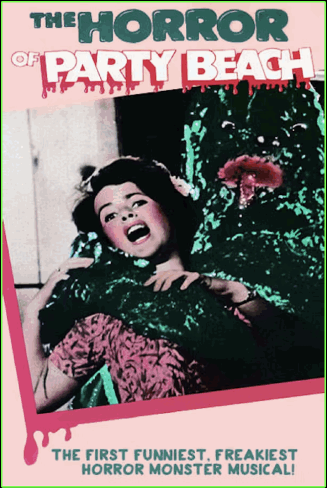

"The Horror of Party Beach" (1964) is a cult classic monster movie blending
beach-party camp with radioactive sea creatures. The film is about a group of teens
that get terrorised by sea monsters who were created by toxic waste dumped in the ocean.
The film is a must see for fans of rubber suited monsters and 1960's surf music.
Fun Facts:
• The monster costumes were made from rubber bike tires.
• It was filmed in Connecticut, not a tropical beach.
• The Del-Aires (the band in the movie) wrote original songs for the film including the song the "Zombie Stomp".